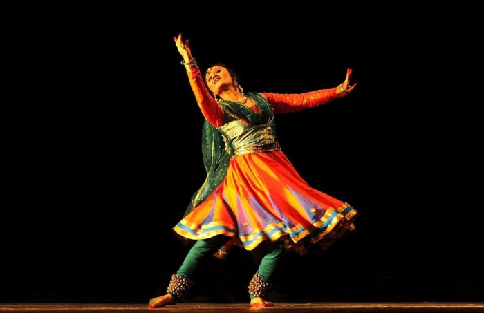
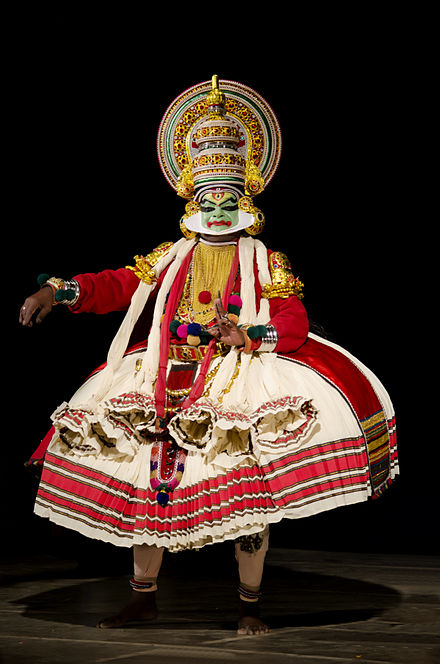
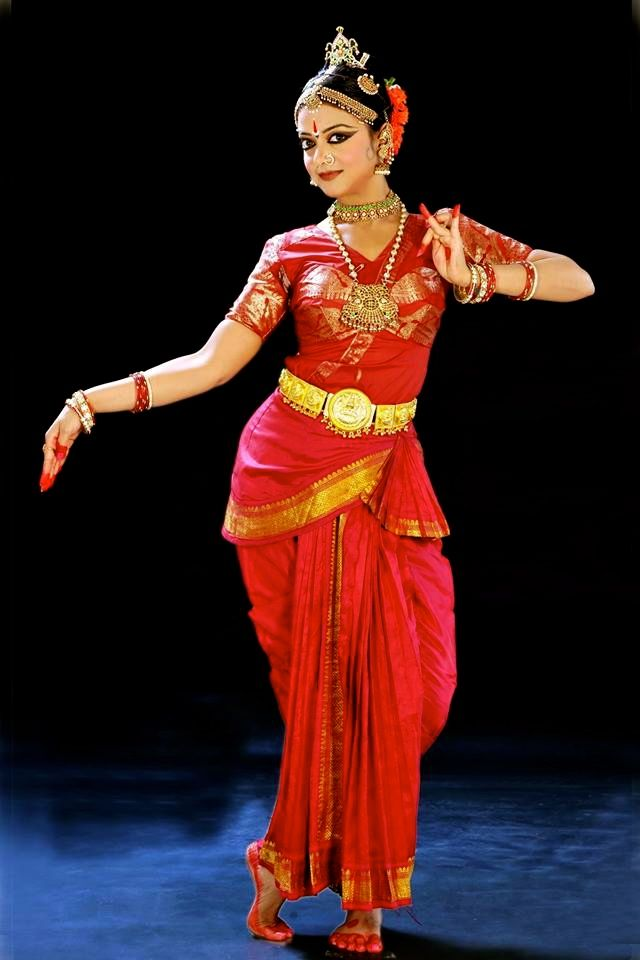
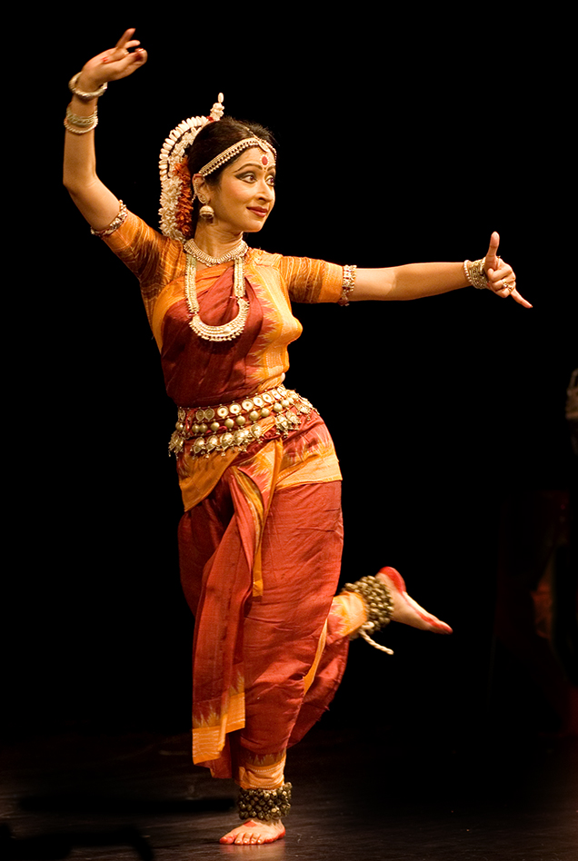
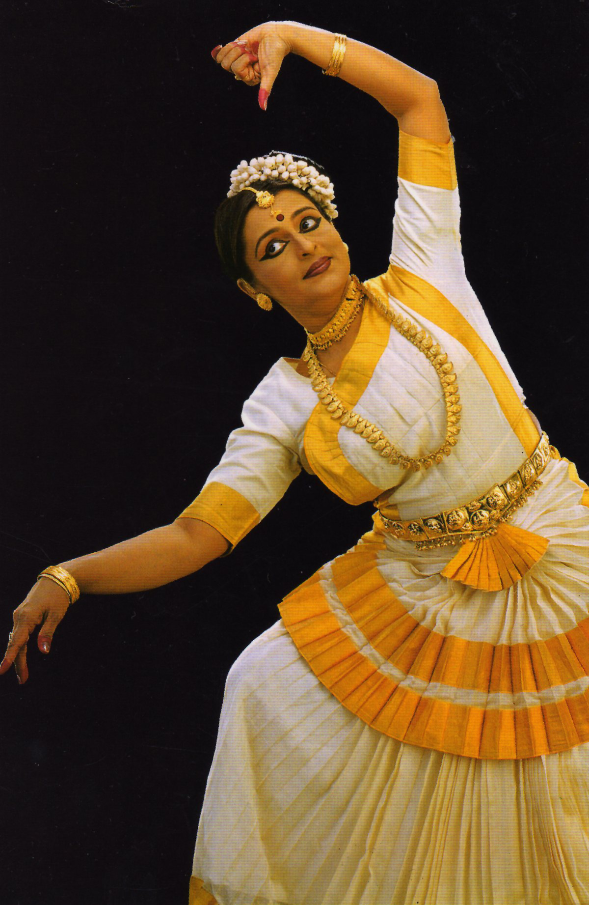

Indian classical dance or 'Shastriya Devesh' is an umbrella term for various performance arts rooted in religious Hindu musical theatre styles,whose theory & practice can be traced to the Sanskrit text Natya Shastra.The number of classical dances range from eight to more, depending on the source and scholar.The Sangeet Natak Academy recognizes seven – Bharatanatyam, Kathak, Kuchipudi, Odissi, Kathakali, Manipuri and Mohiniyattam.Scholars such as Drid Williams add Chhau, Yakshagana and Bhagavata Mela to the list. Additionally, the Indian Ministry of Culture includes Chhau in its classical list. These dances are traditionally regional, all of them include music and recitation in local language or Sanskrit, and they represent a unity of core ideas in a diversity of styles, costumes and expression. At present officially there are 9 classical dances in India.
Bharatanatyam is a dance of Tamil Nadu in southern India. It traces its origins back to the Natyashastra, an ancient treatise on theatre written by the mythic priest Bharata. Originally a temple dance for women, bharatanatyam often is used to express Hindu religious stories and devotions. It was not commonly seen on the public stage until the 20th century.In 1910, the Madras Presidency of the British Empire altogether banned temple dancing, and with it the Bharatanatyam tradition within Hindu temples. The dance movements are characterized by bent legs, while feet keep rhythm. Hands may be used in a series of mudras, or symbolic hand gestures, to tell a story.With the origination of temples in Tamil Nadu, Bharatnatyam soon became an important part of South Indian temples around 300 BCE to 300 CE. Temple dancers are known as Devadasis, who were dedicated to serve the Lord as dasis or servants, performing the dance form and became an important part of rituals in South Indian temples.The traditional Bharatanatyam performance follows a seven-part order of presentation. This set is called margam. The costumes of the dancer are very gorgeous, which consists of 'Paijama' or Dhoti and jacket of Kanchipuram silk and Banaras silk. Women wear a tight fitting 'Choli' or bodice of the same colour and material as the dhoti.Bharatanatyam rapidly expanded after India gained freedom from the British rule in 1947. It is now the most popular classical Indian dance style in India, enjoys high degree of support in expatriate Indian communities, and is considered to be synonymous with Indian dance by many foreigners unaware of the diversity of dances and performance arts in Indian culture.In the second half of the 20th century, Bharatanatyam has been to Indian dance tradition what ballet has been in the West. Bharatanatyam is traditionally a team performance art that consists of a solo dancer, accompanied by musicians and one or more singers. The theory behind the musical notes, vocal performance and the dance movement trace back to the ancient Natya Shastra, and many Sanskrit and Tamil texts such as the Abhinaya Darpana
Kathak

A dance of northern India, Kathak is often a dance of love. It is performed by both men and women. The movements include intricate footwork accented by bells worn around the ankles and stylized gestures adapted from normal body language. It was originated by Kathakas, professional storytellers who used a mixture of dance, song, and drama. Like other Indian dances it began as a temple dance, but soon moved into the courts of ruling houses.Kathak, one of the most elegant dance forms of India, revolves around the concept of storytelling. An art form with inexplicable charm, mesmerising footwork, and graceful movements, Kathak figures among the eight Indian classical dance forms and is the only dance form from northern India.
Kathak has over time evolved into three styles namely Classical, Contemporary and Sufi. It charms and captivates people with its swift pirouettes, unique rhythmic virtuosity and lyrical exploration of romantic as well as devotional poetry. The sharp yet fluid movements synchronised with deft and brisk spins, unleashes a visual splendour onstage taking audiences on a spiritual journey.
One can witness similarities with other dance forms that have its roots in other countries. For instance, the Raqs Sharqi (Egypt), Belly dancing (Middle East), Flamenco (Spain), Tap dance (Ireland) and also Ballet (Russia, France & Italy), shows close relationship with Kathak particularly in the stylised movements, intelligent and rhythmic covering of space and the spins.
Kathakali

Kathakaliis a major form of classical Indian dance. It is a "story play" genre of art, but one distinguished by the elaborately colorful make-up, costumes and face masks that the traditionally male actor-dancers wear.Kathakali is a Hindu performance art in the Malayalam-speaking southwestern region of Kerala.The traditional themes of the Kathakalī are folk mythologies, religious legends and spiritual ideas from the Hindu epics and the Puranas.The vocal performance has traditionally been performed in Sanskritised Malayalam.In modern compositions, Indian Kathakali troupes have included women artistes,and adapted Western stories and plays such as those by Shakespeare.A typical Kathakalī training centre auditions for students, examining health and physical fitness necessary for the aerobic and active stage performance, the body flexibility, sense of rhythm and an interview to gauge how sincere the student is in performance arts Of all classical Indian dances, Kathakali has the most elaborate costuming consisting of head dresses, face masks and vividly painted faces.It typically takes several evening hours to prepare a Kathakali troupe to get ready for a play.Costumes have made Kathakali's popularity extend beyond adults, with children absorbed by the colors, makeup, light and sound of the performance.Kathakalī is still hugely male-dominated, but since the 1970s, women have made entry into the art form on a recognisable scale. The central Kerala temple town of Tripunithura has a ladies' troupe (Tripunithura Kathakali Kendram Ladies Troupe) who perform Kathakali. The troupe won a national award, i.e. Nari Shakti Puraskar, for their work. There are 24 main mudras, and numerous more minor ones in Kathakali.There are nine facial expressions called Navarasas, which each actor masters through facial muscle control during his education, in order to express the emotional state of the character in the play.The theory and foundations of Kathakalī are same as other major classical Indian dances, traceable to Sanskrit texts such as the Natya Shastra, but the expression style in each is very different and distinctive.Kathakali is different from a similar-sounding Kathak, though both are Indian classical dance traditions of "story play" wherein the stories have been traditionally derived from the Hindu epics and the Puranas.
Kuchipudi

Kuchipudi is a dance-drama performance, with its roots in the ancient Hindu Sanskrit text of Natya Shastra.It developed as a religious art linked to traveling bards, temples and spiritual beliefs, like all major classical dances of India.Evidence of Kuchipudi's existence in an older version are found in copper inscriptions of the 10th century, and by the 15th century in texts such as the Machupalli Kaifat. Kuchipudi tradition holds that Tirtha Narayana Yati – a sanyassin of Advaita Vedanta persuasion,and his disciple, an orphan named Siddhendra Yogi, founded and systematized the modern version of Kuchipudi in the 17th century.Kuchipudi largely developed as a Hindu god Krishna-oriented Vaishnavism tradition, and it is most closely related to Bhagavata Mela. A complete Kuchipudi show sequence always consists of nritta and nritya in solo or group performance, but when the underlying text is a play, it may include a natya. The nritta or pure abstract dance parts of Kuchipudi, states Reginald Massey, may include parts such as darus, jatis, jatiswarams, tirmanas and tillanas. The nritya or expressive performance in Kuchipudi includes padams, varnams, shabdams and shlokas. The traditional Kuchipudi was performed by all males troupe. A dancer in a male role would be in Angivastra, also known as Bagalbandi, wear a dhoti (a single pleated piece of cloth hanging down from the waist).A dancer in a female role would wear a Sari with light makeup.Some special Kuchipudi plays may include unusual costumes and theatrics, such as round bottom water pot balanced on the head, dancing with gymnastics or stilt athletics.Other plays may include wing props, a transparent head sheet, or peacock feathered crown to identify the actor playing Krishna. Musical instruments used in Kuchipudi are cymbals, mridangam, violine, thamburi, flute. The Kuchipudi performance is led by a conductor (chief musician) called the Sutradhara or Nattuvanar, who typically keeps the beat using cymbals and also recites the musical syllables; the conductor may also sing out the story or spiritual message being enacted, or this may be a role of a separate vocalist or occasionally the dancer-actors themselves.The Kuchipudi orchestra ensemble includes a drummer (mridangam), a clarinetist and a violinist.Depending on the legend being danced out, other musicians such as a flutist may be present.
Odissi

Odissi , also referred to as Orissi in older literature, is a major ancient Indian classical dance that originated in the Hindu temples of Odisha – an eastern coastal state of India. Odissi, in its history, was performed predominantly by women,and expressed religious stories and spiritual ideas, particularly of Vaishnavism (Vishnu as Jagannath). Odissi performances have also expressed ideas of other traditions such as those related to Hindu gods Shiva and Surya, as well as Hindu goddesses (Shaktism).The theoretical foundations of Odissi trace to the ancient Sanskrit text Natya Shastra, its existence in antiquity evidenced by the dance poses in the sculptures of Odissi Hindu temples,and archeological sites related to Hinduism, Buddhism and Jainism.It was suppressed under the British Rule.The suppression was protested by the Indians, followed by its revival, reconstruction and expansion since India gained independence from the colonial rule. Traditional Odissi repertoire sequence starts with an invocation called Mangalacharana. A shloka (hymn) in praise of a God or Goddess is sung, such as to Jagannath (an avatar of Vishnu), the meaning of which is expressed through dance.Mangalacharana is followed by Pushpanjali (offering of flowers) and Bhumi Pranam (salutation to mother earth). The invocation also includes Trikhandi Pranam or the three-fold salutation – to the Devas (gods), to the Gurus (teachers) and to the Lokas or Rasikas (fellow dancers and audience). The Odissi dancers are colorfully dressed with makeup and jewellery. The Saree worn by Odissi dancers are brightly coloured, and usually of local silk (Pattasari). It is worn with pleats, or may have a pleat tailor stitched in front, to allow maximum flexibility during the footwork.These sarees have traditional prints of Odisha with regional designs and embellishments, and may be the Sambalpuri Saree and Bomkai Saree. Odissi dance is accompanied by the traditional classical music of the state of Odisha, Odissi music. The primary Odissi ragas are Kalyana, Nata, Shree Gowda, Baradi, Panchama, Dhanashri, Karnata, Bhairavee and Shokabaradi.
Manipuri
Manipuri dance, also known as Jagoi,is named after the region of its origin – Manipur, a state in northeastern India bordering with Myanmar (Burma), Assam, Nagaland and Mizoram. Manipuri dance encompasses both classical and folk dance forms. The folk dance forms are mainly attributed to regional deities such as Umang Lai and performed during Lai Haraoba, and also the dances of the different tribal communities of Manipur.The classical Manipuri Raas Leela is one of the major Indian classical dance forms.The dance form is based on Hindu Vaishnavism themes, and exquisite performances of love-inspired dance drama of Radha-Krishna called Raas Leela. The Manipuri dance, in general, is a team performance, with its own unique costumes, aesthetics, conventions and repertoire.[8] Manipuri dance is a religious art and its aim is the expression of spiritual values. Aspects of this performance art is celebrated during festivals and major rites of passage such as weddings among the Manipuri people, particularly in the ethnic majority of Meitei people. This classical Manipuri dance features unique costumes. The women characters are dressed like a Manipuri bride, in Potloi costumes,of which the most notable is the Kumil. A Kumil is an elaborately decorated barrel shaped long skirt stiffened at the bottom and close to the top. The decorations on the barrel include gold and silver embroidery, small pieces of mirrors, and border prints of lotus, Kwaklei orchid, and other items in nature.The male characters dress in a dhoti (also called dhotra or dhora) – a brilliantly colored broadcloth pleated, wrapped and tied at waist and allowing complete freedom of movement for the legs. The Krishna character wears a peacock feather containing crown, with a feathery attachment at the back. The musical accompaniment for Manipuri dance comes from a percussion instrument called the Pung (a barrel drum), a singer, small kartals (cymbals), sembong, harmonium, and wind instrument such as a flute
Mohiniyattam

Mohiniyattam, is one of the famous classical dances of India that developed and remained popular in the state of Kerala. Kathakali is another classical dance form of Kerala.Mohiniyattam dance gets its name from the word Mohini – a historical enchantress avatar of the Hindu god Vishnu, who helps the good prevail over evil by developing her feminine powers. Mohiniyattam's roots, like all classical Indian dances, are in the Natya Shastra – the ancient Hindu Sanskrit text on performance arts.However, it follows the Lasya style described in Natya Shastra, that is a dance which is delicate, eros-filled and feminine.It is traditionally a solo dance performed by women after extensive training. The repertoire of Mohiniyattam includes music in the Carnatic style, singing and acting a play through the dance, where the recitation may be either by a separate vocalist or the dancer herself. The song is typically in Malayalam-Sanskrit hybrid called Manipravalam. The costume includes plain white or off-white such as ivory or cream colored sari embroidered with bright golden or gold laced colored brocade (similar to a ceremonial Kasavu saree). She wears a fitted choli (blouse) matching the sari, below which at the waist is a golden belt which tucks in the end of the sari, and highlights the waist. In front of the saree, below the belt is pleated sheet with concentric bands in gold or saffron colors, which allow freedom of movement and assist in visually communicating the mudra to distant audience.The dancer wears relatively simple jewelry and no masks, in contrast to the other major classical dance of Kerala called Kathakali. Her jewelry typically includes items on fingers, wrists, neck and ears (which may have bells). The face makeup is natural, but lips are brilliant red, she has the Hindu tikka (Gobi) on her forehead and her eyes are lined to help prominently highlight the eye movements during the dance.Her ankles are adorned with leather straps with bells (chilanka), feet and fingers colored red with natural dyes. Her hairdo is gathered and tied into a smooth tight round chignon on one side of her head (typically left) and the bun then ringed with fragrant flowers (typically jasmine mulla). The vocals (music) of Mohiniyattam involves various rhythms. There are numerous compositions for a Mohiniyattam repertoire, most of whose lyrics are in Manipravalam, a mixture of Sanskrit, Tamil and Malayalam.
 Bharatanatyam is a dance of Tamil Nadu in southern India. It traces its origins back to the Natyashastra, an ancient treatise on theatre written by the mythic priest Bharata. Originally a temple dance for women, bharatanatyam often is used to express Hindu religious stories and devotions. It was not commonly seen on the public stage until the 20th century.In 1910, the Madras Presidency of the British Empire altogether banned temple dancing, and with it the Bharatanatyam tradition within Hindu temples. The dance movements are characterized by bent legs, while feet keep rhythm. Hands may be used in a series of mudras, or symbolic hand gestures, to tell a story.With the origination of temples in Tamil Nadu, Bharatnatyam soon became an important part of South Indian temples around 300 BCE to 300 CE. Temple dancers are known as Devadasis, who were dedicated to serve the Lord as dasis or servants, performing the dance form and became an important part of rituals in South Indian temples.The traditional Bharatanatyam performance follows a seven-part order of presentation. This set is called margam.
Bharatanatyam is a dance of Tamil Nadu in southern India. It traces its origins back to the Natyashastra, an ancient treatise on theatre written by the mythic priest Bharata. Originally a temple dance for women, bharatanatyam often is used to express Hindu religious stories and devotions. It was not commonly seen on the public stage until the 20th century.In 1910, the Madras Presidency of the British Empire altogether banned temple dancing, and with it the Bharatanatyam tradition within Hindu temples. The dance movements are characterized by bent legs, while feet keep rhythm. Hands may be used in a series of mudras, or symbolic hand gestures, to tell a story.With the origination of temples in Tamil Nadu, Bharatnatyam soon became an important part of South Indian temples around 300 BCE to 300 CE. Temple dancers are known as Devadasis, who were dedicated to serve the Lord as dasis or servants, performing the dance form and became an important part of rituals in South Indian temples.The traditional Bharatanatyam performance follows a seven-part order of presentation. This set is called margam.